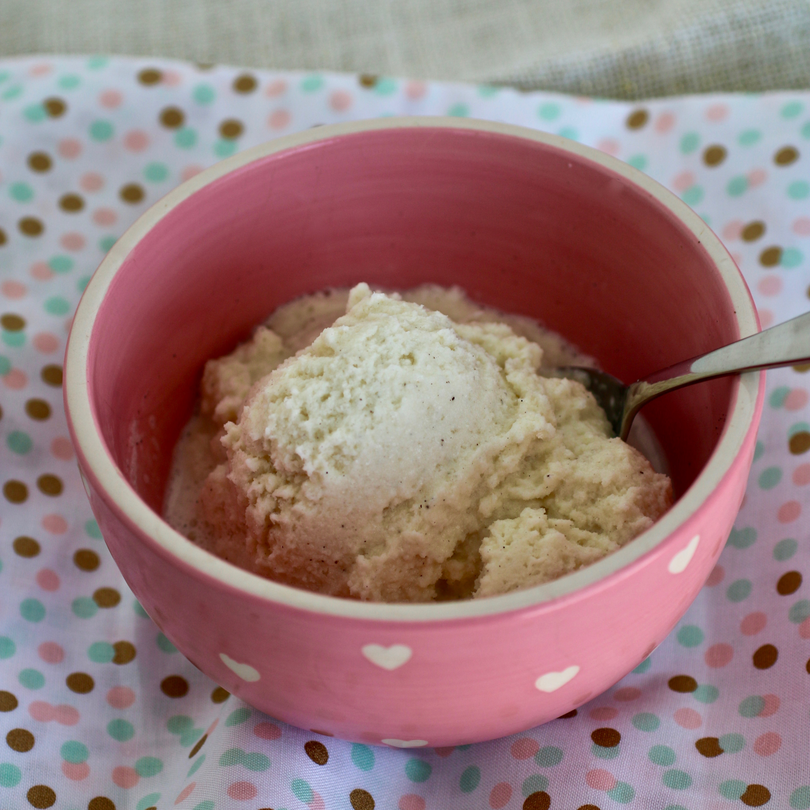

Snow Cream

Description
Fresh snow turned ice cream in 5 minutes or less! Fun to do with kids. The toppings/mix-in options are endless. Fresh fruit is a great mix in for snow cream, as well as chocolate chips.
Ingredients
- 8 cups clean fresh snow
- 1 (14 ounce) can sweetened condensed milk
- 1 tablespoon vanilla extract
Steps
- Mix snow, sweetened condensed milk, and vanilla extract together in a bowl until well mixed.